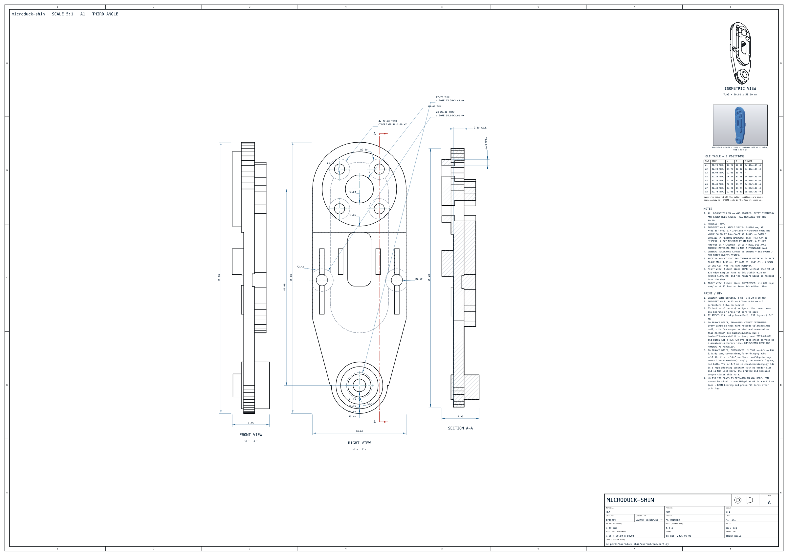

Solid and drawing readback: PASS. Eight sheet gates: PASS.
Full manufacturing contract: INCOMPLETE. Manufacturing release: NOT RELEASED.
The geometry remains the existing reconstructed solid. The drawing's layout, source-linked annotations and serialized files are independently checked. A layout or nominal-dimension pass does not settle unknown original geometry or production fits.
| Measurement | Preserved baseline | Current canonical drawing |
|---|---|---|
| Dimension coverage (%) | 45.045 | 100.0 |
| Content occupancy (%) | 28.1042 | 99.8782 |
| Minimum lettering (mm) | 1.7 | 3.5 |
| Isometric views | 2 | 4 |
| Shaded colour renders | 1 | 6 |
| Unchanged acceptance rule | Baseline | Current |
|---|---|---|
| line_ratio | PASS | PASS |
| coverage | FAIL | PASS |
| empty_rect | FAIL | PASS |
| font | FAIL | PASS |
| iso | FAIL | PASS |
| renders | FAIL | PASS |
| curve_density | FAIL | PASS |
| dim_coverage | FAIL | PASS |
Self-contained SVG · PDF with embedded renders · Vector-only DXF companion · Machine-readable result and remaining clauses

Native drawing readback · Eight measured sheet gates · PDF image and operator readback · Actual camera-to-paper scale readback · Feature, camera and layout source evidence
| Governing clause | Subject and status | Remaining requirement | Next concrete action |
|---|---|---|---|
| A.5 / A4 | drafting / PARTIAL | Three hidden arcs have coordinate locators but still need section/detail leaders to satisfy the literal A.5 leader-to-each clause; non-circular feature locators need audit. | Add source-linked section/detail leaders for E009/E047/E061 and audit planar/slot occurrences; retain unmeasured classes as CANNOT DETERMINE. |
| A3.2 | drafting / PARTIAL | Enlarged shaded feature-cluster detail renders. | Add a detail sheet with six true camera-rendered feature views and preserve every per-sheet area threshold. |
| A4 | measurement / CANNOT DETERMINE | Unmeasured chamfer, rib, draft, step, mate and wall geometry as enumerated by the instrument. | Use original CAD or independently measured feature sections and interface observations. |
| A4 tolerances / A3.5 | measurement / CANNOT DETERMINE | Production fit bands, original material/finish specification and qualified fastener stack. | Obtain source drawings and perform recorded fit/coupon and fastener-stack measurements. |
BUILD PASS; eight gates PASS; live-solid context recheck PASS. Context and detail scales are independently read back as [5.897450514179779, 5.897450514179779, 5.897450514179779, 5.89745051417978, 10.549835760234915, 10.549835760234915]. Full contract remains INCOMPLETE.
11 individual leaders and 1 coordinate locators cover 12 selected circular edges. E061 still needs its literal leader. True top/bottom remain on the principal sheet; supplement interpretation is disclosed, not claimed as full acceptance.
Staged supplementary PDF · Supplementary result · Live source and camera evidence
Authority: Manufacturing file requirements. This artifact report does not replace the project's existing closure backlog.
ce-cad/bin/cad tools/draw_part.py microduck-shin --layout=render-panels ce-cad/bin/cad tools/test_rendered_drawing.py ce-cad/bin/cad tools/test_radius_locators.py
The route stages files and replaces canonical artifacts only after solid readback, all eight sheet gates, PDF pixel/placement readback and camera-scale readback pass. Its full-contract status remains separate.

Baseline measurements{kind=link}